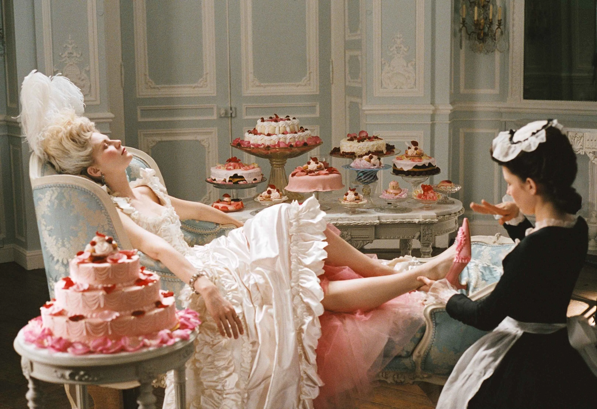
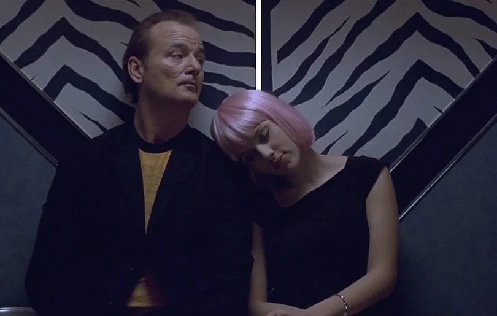
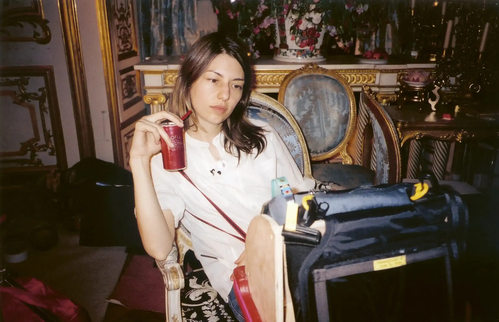
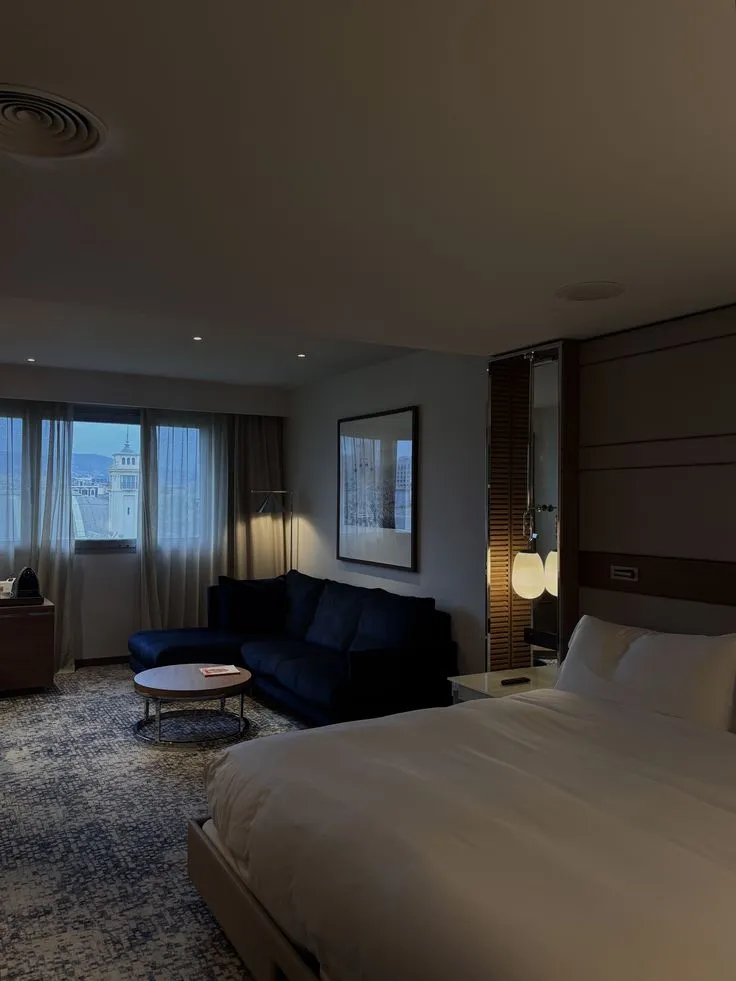
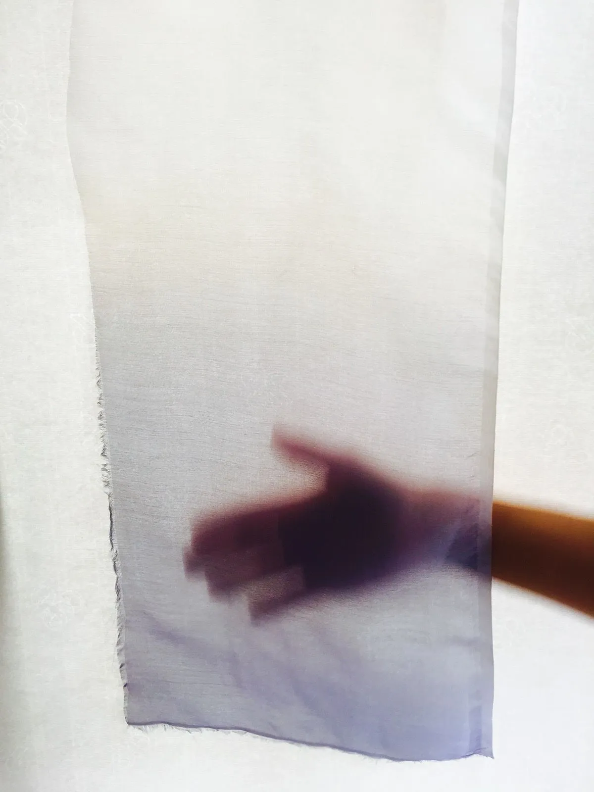
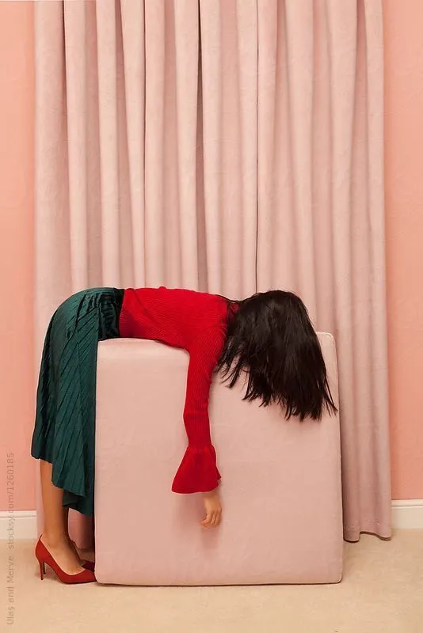
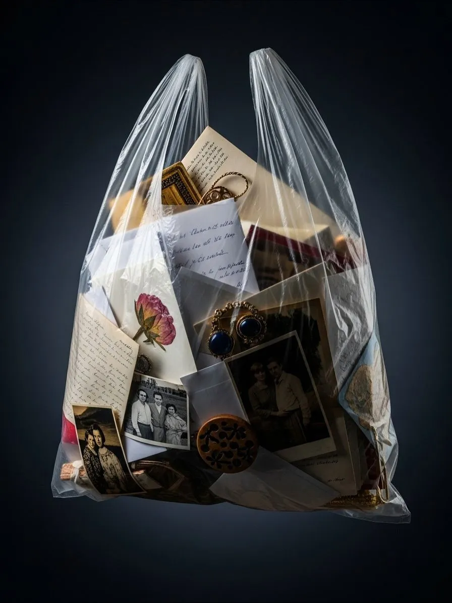
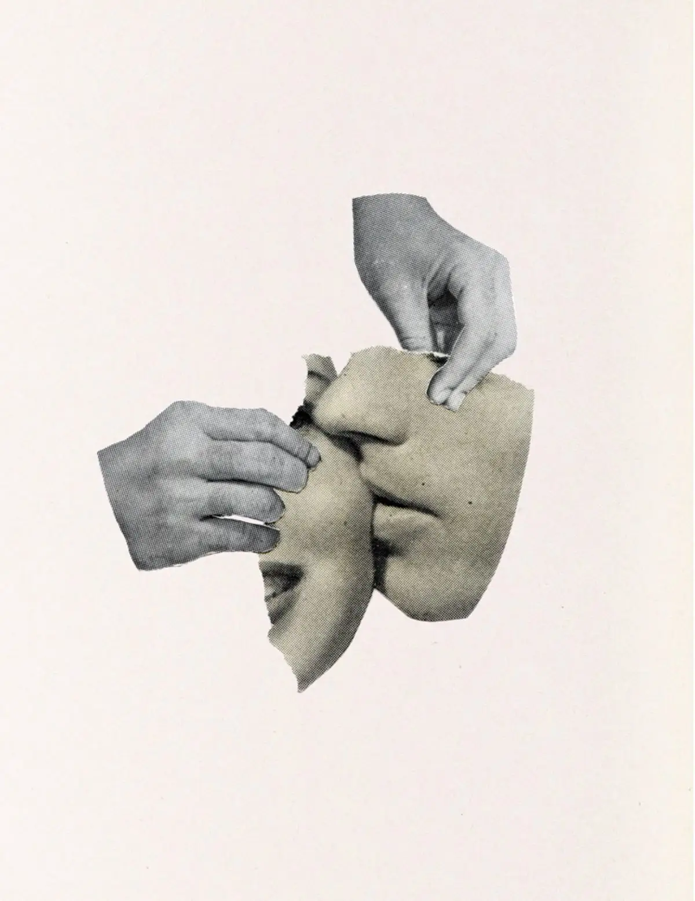

Arquitecta de la Melancolía
Sofia Coppola
"Me encanta esa sensación de algo que te conmueve y te hace feliz, pero con un velo de melancolía o amargura."
Habitaciones Propias
Para Coppola, el espacio no es solo físico, sino un emocional palpable.
Sus atmósferas no buscan la grandiosidad, sino una melancólica.
Cada habitación, cada hotel, cada café es un escenario donde el silencio pesa tanto como los objetos: todo está cuidadosamente compuesto para reflejar los vacíos, los deseos y las desconexiones de quienes lo habitan.

Diario Visual
Fragmentos de una feminidad suspendida en el tiempo: notas sobre la melancolía, el lujo silencioso y la belleza de los instantes vacíos.
01

02
03
04
05
06
lost in translation • marie antoinette • the virgin suicides • priscilla • somewhere •lost in translation • marie antoinette • the virgin suicides • priscilla • somewhere •lost in translation • marie antoinette • the virgin suicides • priscilla • somewhere •lost in translation • marie antoinette • the virgin suicides • priscilla • somewhere •
Roba la Paleta
Haz clic para copiar el código HEX y pintar la atmósfera.
Nude Blush
Petit Trianon Green
Blue Filter
Chiffon Candlelight
Beverly Hills Sand
¡Color Copiado!
Filmografía Selecta
1999
The Virgin Suicides
ADMIT ONE
2003
Lost in Translation
ADMIT ONE
2006
Marie Antoinette
ADMIT ONE
2010
Somewhere
ADMIT ONE
2023
Priscilla
ADMIT ONE